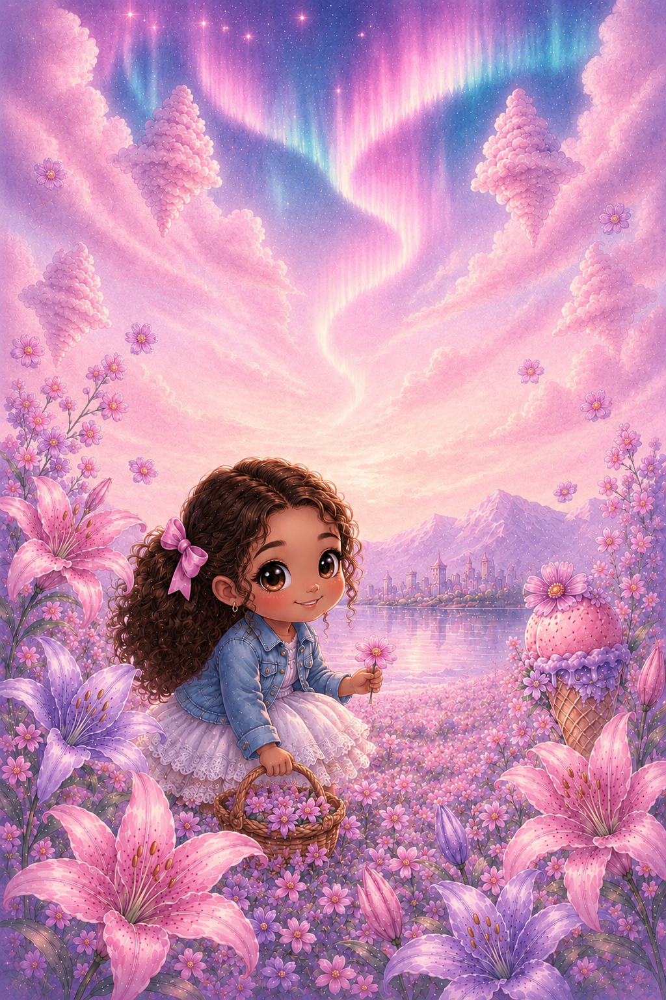
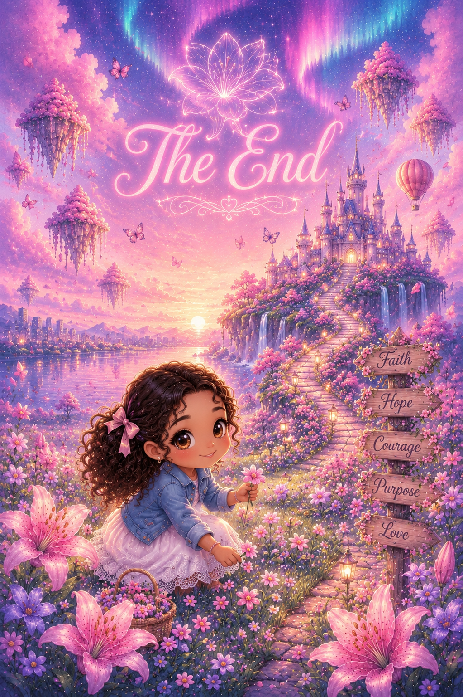

Hello, Athenna! How’s it going? I wanted to write you an encouragement card after our e-date as an opportunity to lift you up and give you the rare chance to see how you are viewed by someone else. I hope this encourages you!
First of all, I like to rib you about the randomness of what you like and dislike, but it is only because your preferences are often so unexpected. You are a living version of the video hyperlinked at the end of this message
Funny!
More importantly, though, it is a memorable part of your personality.
Speaking of your personality, you have a very positive and pleasant one. You are a bright person, and you bring that brightness wherever you go, bringing laughter and joy to those around you.
It is also awesome to see that you have such a massive heart for helping and healing others. You embody the heart of the Good Samaritan and the heart of Jesus’ disciples, who were quick to follow Him.
You are an awesome sister, and it is amazing to see you grow in your abilities as a disciple and make a difference in the lives of those around you.
2 Corinthians 12:7–9
7 Because of the surpassing greatness of the revelations, therefore, to keep me from becoming conceited, I was given a thorn in my flesh, a messenger of Satan, to torment me. 8 Three times I pleaded with the Lord to take it away from me. 9 But he said to me, “My grace is sufficient for you, for my power is made perfect in weakness.” Therefore I will boast all the more gladly about my weaknesses, so that Christ’s power may rest on me.
What I want to impart from this passage relates to what you said about your stutter and how you have overcome it. Not by losing it but by realizing that it doesn't matter and that with or without it you are capable and valuable. While you may never truly know why God placed it in your path, He may have used it to help you grow into a stronger person. He has shaped you with a deft hand and a masterful touch into the person you are today, and He will continue shaping you into the person He wants you to become tomorrow.
P.S. This is YOU
